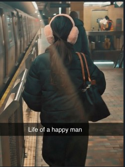
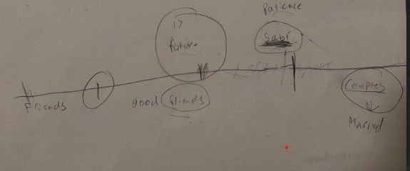

The End
One Year in the Books
14
Page 13: True love evolves

Today, life of a happy man—that’s what I call today. That young girl with infinite words and feisty persona, walking right in front of me while I have her flowers and gift bag in my hand, perfectly encapsulates how I see you. A normal day in New York City, with my whole life walking right in front of me. Sometimes I sit and think, it’s incredible how lucky I got. It’s not something that happens, it’s something that destined. Your smile, your energy, your sense of motherhood, your sense of friendship, and your sense of lover, all within you, has fulfilled me more than what I can ask for. You taught me so much, even about myself, and I’m forever grateful. Thank you for everything Fatima. I Love You.
Plato - “At the touch of love everyone becomes a poet.”
Plato - “At the touch of love everyone becomes a poet.”
13
A moment to point out was my car. That car was one of the best highlights from this era. Driving to school and meeting up with you in the evening and parking in empty neighborhoods. Dropping you off at work and driving anywhere we want to. Those moments were so special. But with special moments like these, we had personality shifts, and we both started to fight a lot, a lot. We had serious moments, a serious test to our relationship. And I’m elated to say, we persevered and made it to where we are. With life changing and moving so fast, and that conflicting with each other, we chose to not give up. I hope forever, that our faith continues to thrive.
12
Page 11: Revolutionary era
September 1 - December 31st

College starts, and for the first time, we’re full time college students. Not only college, but everything around us changed. We both started working full time, we both started prioritizing our career, and most importantly, we both personally changed. Life got hectic, but we didn’t want it any other way. We matured, we set boundaries, and this is the moment I felt us transitioning from teenagers to young adults. I felt us becoming more calm and composed. We didn’t have time for each other. But inevitably, we always found a way. This photo is us at Brooklyn bridge, amidst of all this chaos.
11
An importnat highlight that we must mention, was Cunningham park. It was definitely, by far, my favorite hangout place. A big open field, nice breeze, and so much walking room, it was just so perfect. We found the perfect seats, away from people and enjoyed our time in nature while talking. We hugged, we played games, we even fought 😂 (I mean physically). Summer time feels nostalgic, but it was only recently. Thank you for being with me in these moments.
10
Page 9: Broke Days, Rich in Time(summer).
June - September

-you know that one song? “Young dumb broke highschool kids”. Well we weren’t highschool kids but we were young dumb and very broke 😂. Summer era was a time of pure freedom in lovely weathers of New York. No class in person, no work, just us with endless opportunity to venture more into our relationship. We kept it simple, we didn’t go nowhere crazy, we didn’t buy expensive food, we didn’t do crazy activities. But the special part of this time was that none of that mattered to us. All that mattered was being together. It came with ups and downs but nothing we shouldn’t regret. We had some of our best moments here. From going to Central Park to playing football, or even being in online class together, these moments were unforgettable.
9
I’m sorry if you don’t like these pics but they’re iconic for a reason. I was bald during this time, how can I forget 😂. Besides school, we would constantly hang out after class. I would go to the gym and you would wait for me. Jamaica was our main hanging spot, and how can we forget our first hangout spot outside of school: shake shack. We had minor arguments, but our love was completely inevitable to us. Those long convos were very alive, being with you brought out every ounce of joy from my heart. It felt like the day was going fast, and I would urge you to stay later. But also, I wanna say thank you, for staying w me even when I was bald ❤️❤️❤️.
8
Page 7: college era-young couple in the shadows
febuary - June

Fast forward a lil over a month, we’re very comfortable with eachother. During this era, we were still in QCC, but that’s it. It was special because we connected more and got to know eachother more. I’ll never forget the days we would meet up before every class early morning at around 9 am, and just enjoy each other’s company. We would play “we listen and we don’t judge” and “truth or dare” nonstop. But most importantly, those jeopardy games were iconic. I’ll never forget also trying to hide from people when we went to print out paper. special moments. 😂
7

They call it the honeymoon phase, but to be honest, the way we were treating each other during this time was like we were best friends. The difference is I was able to hug you and say I love you. Butterflies came alive during physical interaction, but your personality, since day one, has always been my type, and that’s why you’re my girl. This is also another funny moment when we left the tech building around 7pm and I had a lil fun pushing you in the snow. I hope you don’t mind, now that you’re looking back at it 😂. We had good energy, we felt young, perhaps for the last time as teens. To close this off, our love was young, our relationship was just born. I’m happy the way this time went.
6
Page 5: Young love energy
January 4 - January 17

We found love, we took every opportunity to be with eachother. This is when our love was young. We were still in highschool and hiding, but we were together all day. This pic was in the library after class during winter session, so we were alone and just talking. Do you remember the convos we had? I remeber holding eachother all day and immediately letting go when someone walks in 😂😂. We also watched a lot of movies and started AOT, our first very couply thingy to do. It was a special time, to love freely. We had no boundaries during this time, we were just happy to be together, that’s how young love is meant to be.
5
-friends turned into lovers. We started by getting to know eachother, on a very personally level. We called every night, each night having a different excitement, and soon, the I love you’s started to spill out. Senior trip was our highlight of this era. We snuck around at the peak of senior year and truly felt love. I’ll never forget these days. Feeling the warmth of your hands and hugging you for the first time. The funny part was running away whenever someone would come, making eye contact secretly during lunch, getting coffee 7am in the morning 😂. I wouldn’t have wished it any other way. A 2 years friendship came to an end here, but a lovely beginning took place.
4
Page 3: friends turn to lovers
December 19- January 3

December 19th, 2024. The root of our story, our first stamp in this relationship. This one line I foolishly drew to try to define our relationship at the time, was the start of everything. This was the start of something very special, my greatest gift. Let’s embark on this journey Fatima and look at this era of our lives, friends turned into lovers.
3
Table of Contents
Friends Turn to Lovers 3–4
Young Love Energy 5–6
College & Secretive Era 7–8
Broke Days, Rich in Time 9–10
Revolutionary Era 11–12
True Love Evolves 13–14
Young Love Energy 5–6
College & Secretive Era 7–8
Broke Days, Rich in Time 9–10
Revolutionary Era 11–12
True Love Evolves 13–14
2
Inspired by Arianlations 101 😉
1
2025 recap
Arian ❤️ Fatima
❮
❯